Família Nexo · logos
Mesma gramática da NexoPulse: hexágono de nós conectados + ícone do app · "Nexo" em azul-escuro + nome no degradê ciano → verde
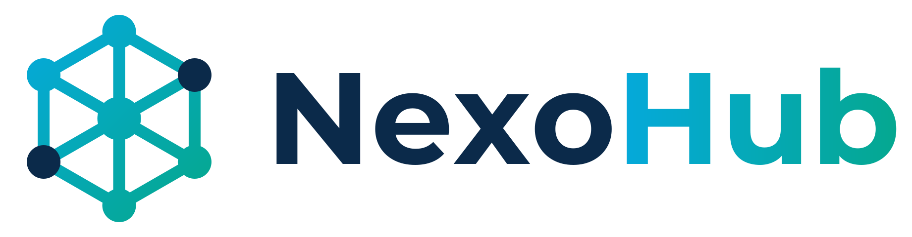
Portal único do cliente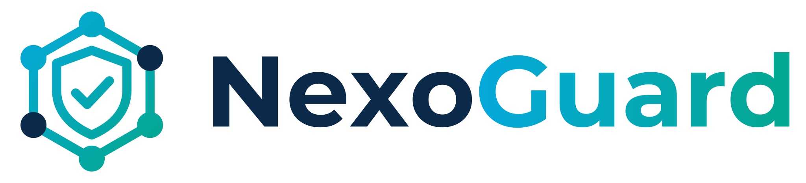
Segurança da rede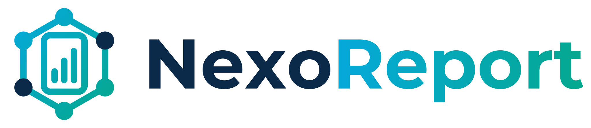
Relatórios inteligentes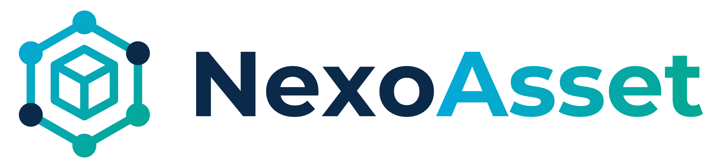
Inventário de TI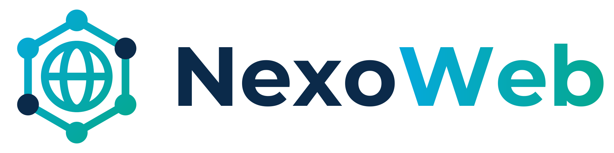
Sites e sistemas online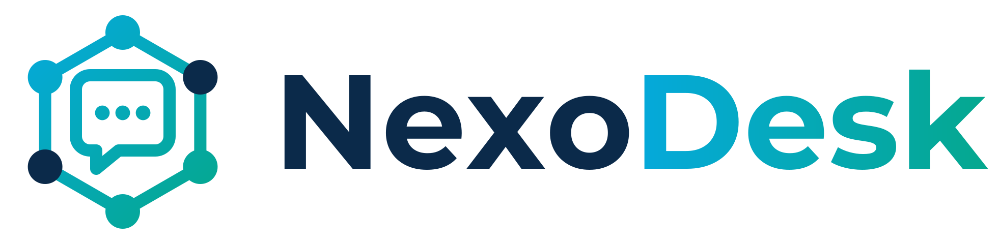
Chamados e suporte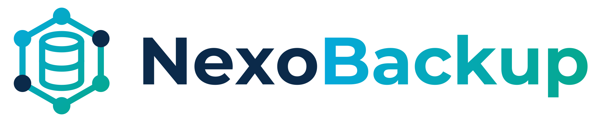
Backup gerenciado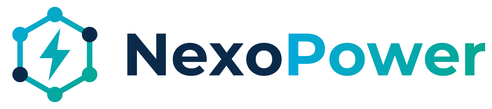
Energia e nobreak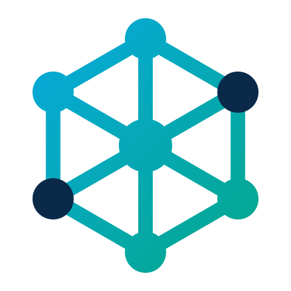
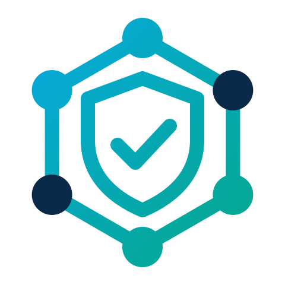
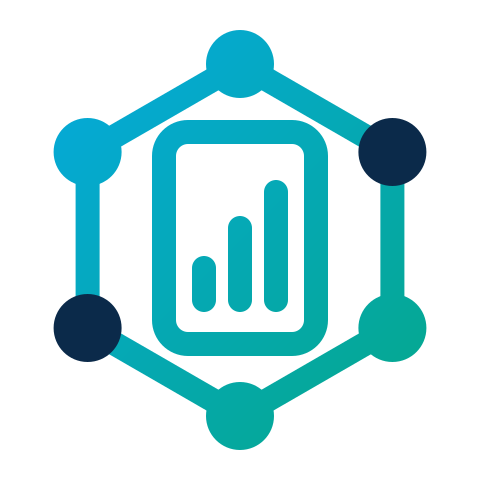
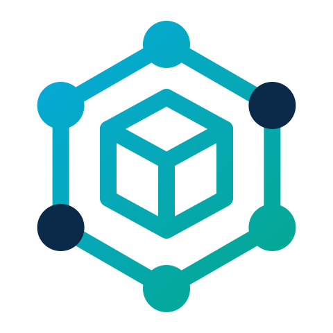
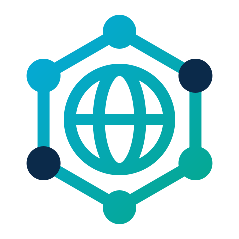
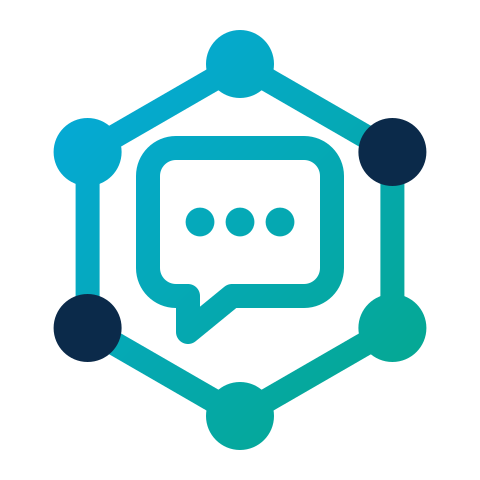
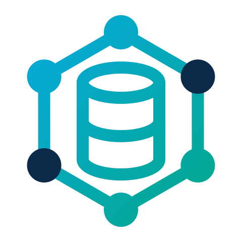
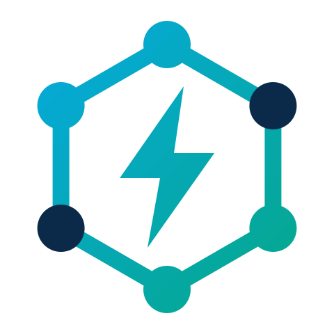